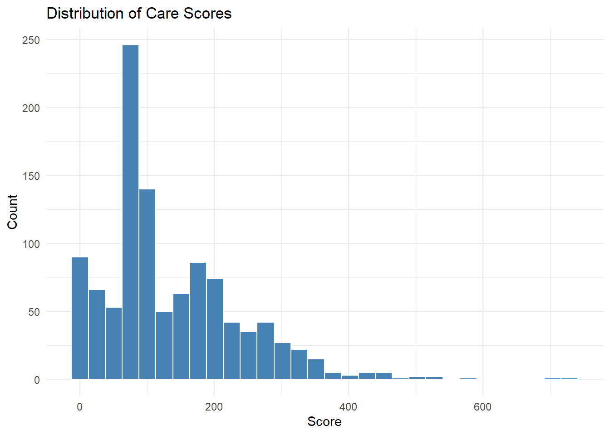
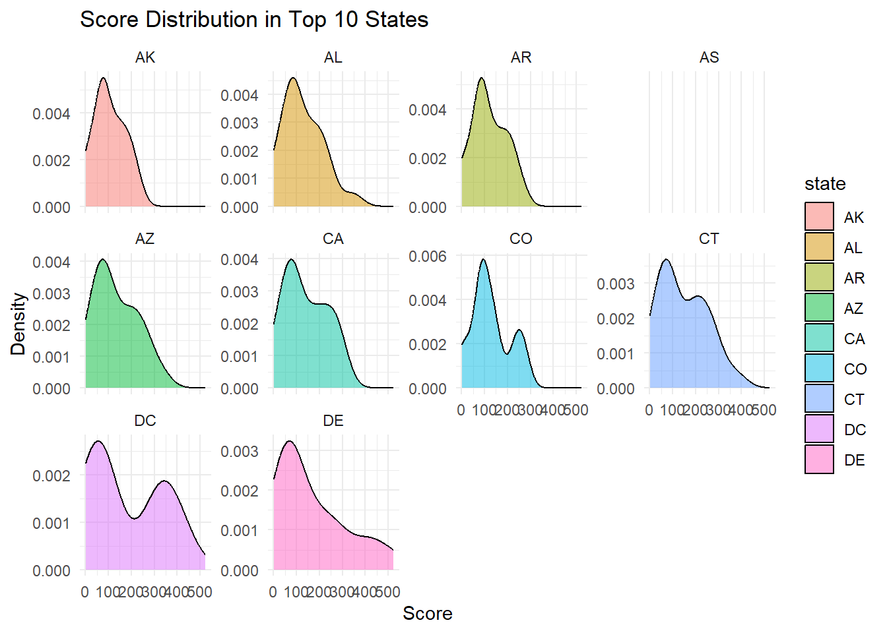
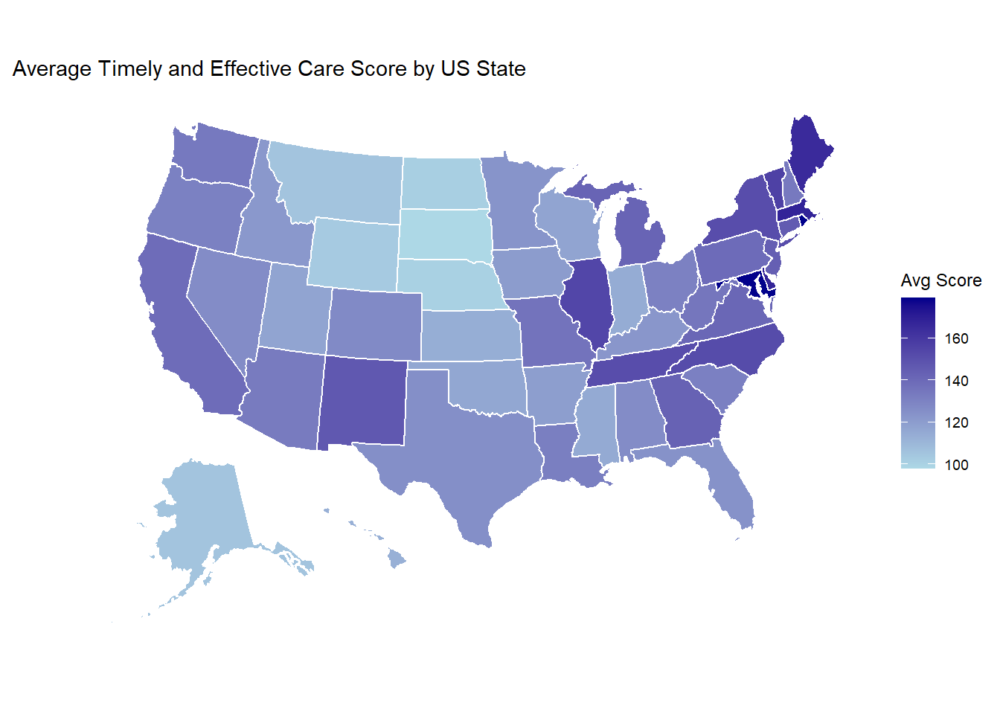
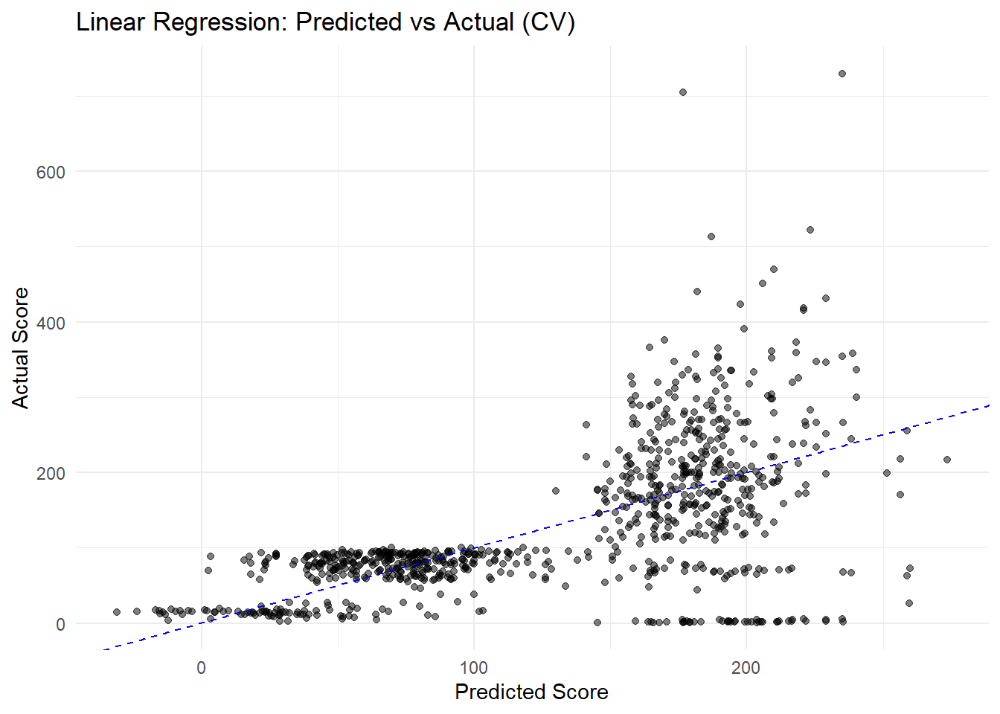
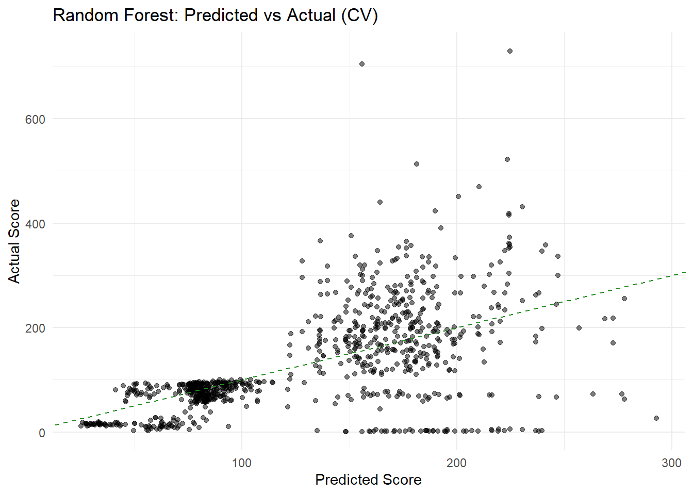
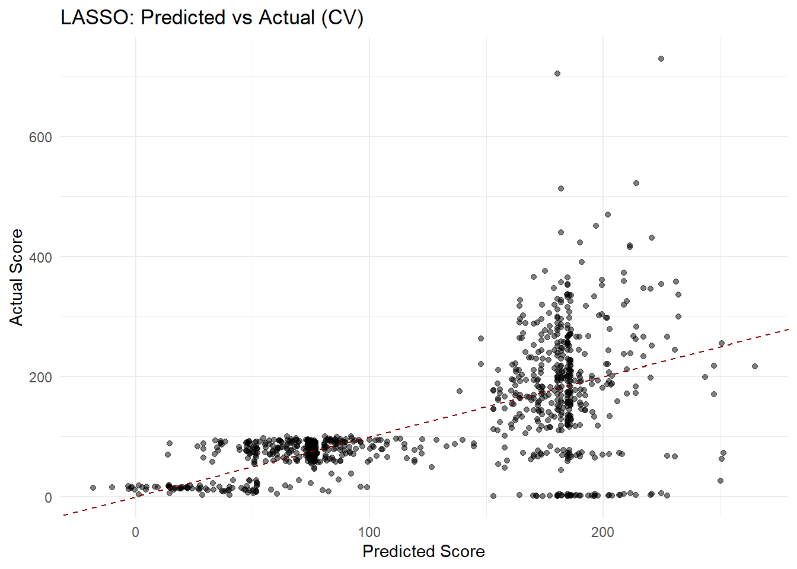
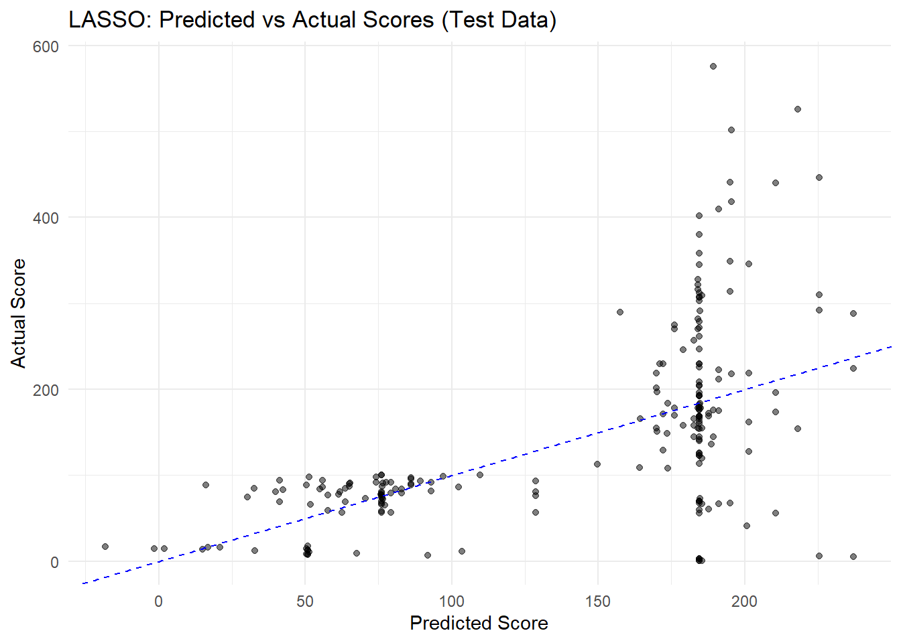

This week’s TidyTuesday dataset explores state-level performance metrics for “Timely and Effective Care” in the United States, as reported on medicare.gov. The data was curated by the CMS (Centers for Medicare & Medicaid Services) and released on April 8, 2025, as part of Week 14 of the TidyTuesday project. It includes scores for healthcare quality measures related to emergency care, immunizations, infection control, and more—categorized across six main clinical conditions. Emergency department wait times are one highlight of the dataset, showing substantial variation across states, with some states experiencing delays of over three hours. This data offers a useful lens to examine healthcare system performance at the state level.
The dataset consists of variables such as state, condition, measure ID and name, score, and time frame for data collection. In this analysis, we will begin by tidying the data and performing exploratory analysis to understand the distribution and patterns in care scores across states and conditions. We will then define a specific modeling question to explore using the tidymodels framework in R, fit several predictive models, and evaluate their performance. This project provides an opportunity to apply the full data science workflow—from loading and cleaning data to building and interpreting machine learning models—while contributing to the open and collaborative TidyTuesday community.
Loading the libraries
Loading data
In this step, we begin by loading the care_state.csv file using a relative file path with the here() function. We then examine the structure and contents of the dataset using glimpse(), skim(), and head() to understand the variables, their types, and any missing values. This initial inspection helps us get familiar with the data before performing any cleaning or analysis.
# Just load the data without piping for nowcare_data <-read_csv(here("tidytuesday-exercise", "data", "care_state.csv"))
Rows: 1232 Columns: 8
── Column specification ────────────────────────────────────────────────────────
Delimiter: ","
chr (5): state, condition, measure_id, measure_name, footnote
dbl (1): score
date (2): start_date, end_date
ℹ Use `spec()` to retrieve the full column specification for this data.
ℹ Specify the column types or set `show_col_types = FALSE` to quiet this message.
# Peek at the structure of the datasetglimpse(care_data)
# Summarize data for variable types, missing values, etc.skim(care_data)
Data summary
Name
care_data
Number of rows
1232
Number of columns
8
_______________________
Column type frequency:
character
5
Date
2
numeric
1
________________________
Group variables
None
Variable type: character
skim_variable
n_missing
complete_rate
min
max
empty
n_unique
whitespace
state
0
1.00
2
2
0
56
0
condition
0
1.00
11
35
0
6
0
measure_id
0
1.00
5
20
0
22
0
measure_name
0
1.00
26
172
0
21
0
footnote
168
0.86
1
6
0
3
0
Variable type: Date
skim_variable
n_missing
complete_rate
min
max
median
n_unique
start_date
0
1
2023-01-01
2024-01-01
2023-04-01
4
end_date
0
1
2023-12-31
2024-03-31
2024-03-31
2
Variable type: numeric
skim_variable
n_missing
complete_rate
mean
sd
p0
p25
p50
p75
p100
hist
score
155
0.87
134.04
102.02
1
70
93
193
730
▇▃▁▁▁
#View first few rowshead(care_data)
# A tibble: 6 × 8
state condition measure_id measure_name score footnote start_date end_date
<chr> <chr> <chr> <chr> <dbl> <chr> <date> <date>
1 AK Healthcare… HCP_COVID… Percentage … 7.3 <NA> 2024-01-01 2024-03-31
2 AK Healthcare… IMM_3 Healthcare … 80 <NA> 2023-10-01 2024-03-31
3 AK Emergency … OP_18b Average (me… 140 25, 26 2023-04-01 2024-03-31
4 AK Emergency … OP_18b_HI… Average tim… 157 25, 26 2023-04-01 2024-03-31
5 AK Emergency … OP_18b_LO… Average tim… 136 25, 26 2023-04-01 2024-03-31
6 AK Emergency … OP_18b_ME… Average tim… 136 25, 26 2023-04-01 2024-03-31
EDA
In the exploratory data analysis (EDA), I begin by examining the distribution of the score variable to understand the overall spread and identify any outliers or skewness in the data. Next, I explore the frequency of observations across different medical conditions to see which areas of care are most represented in the dataset. I then calculate and visualize the average score for each condition to identify which conditions tend to have higher or lower performance metrics. Finally, I analyze the distribution of scores in the top 10 states with the most records to investigate potential geographic variation in care quality. This initial exploration helps uncover patterns and informs the direction of further analysis and modeling.
# Histogram of score valuesggplot(care_data, aes(x = score)) +geom_histogram(bins =30, fill ="steelblue", color ="white") +labs(title ="Distribution of Care Scores",x ="Score",y ="Count" ) +theme_minimal()
Warning: Removed 155 rows containing non-finite outside the scale range
(`stat_bin()`).

care_data %>%count(condition, sort =TRUE) %>%ggplot(aes(x =fct_reorder(condition, n), y = n)) +geom_col(fill ="darkorange") +coord_flip() +labs(title ="Number of Observations per Condition",x ="Condition",y ="Count" ) +theme_minimal()
top_states <- care_data %>%count(state, sort =TRUE) %>%slice_head(n =10) %>%pull(state)care_data %>%filter(state %in% top_states) %>%ggplot(aes(x = score, fill = state)) +geom_density(alpha =0.5) +facet_wrap(~ state, scales ="free_y") +labs(title ="Score Distribution in Top 10 States",x ="Score",y ="Density" ) +theme_minimal()
Warning: Removed 36 rows containing non-finite outside the scale range
(`stat_density()`).

# Prepare state-level average scorestate_score_avg <- care_data %>%group_by(state) %>%summarise(avg_score =mean(score, na.rm =TRUE))# Plot the mapplot_usmap(data = state_score_avg, values ="avg_score", color ="white") +scale_fill_continuous(low ="lightblue", high ="darkblue", name ="Avg Score", label = scales::comma ) +labs(title ="Average Timely and Effective Care Score by US State" ) +theme(legend.position ="right")

Research Question
Based on the patterns observed in the exploratory data analysis, I noticed that care quality scores vary substantially across both states and medical conditions. For example, conditions such as “Emergency Department” tend to have higher average scores, while others like “Electronic Clinical Quality Measure” have relatively lower averages. Similarly, when visualized on a U.S. map, the average score by state revealed clear geographic trends, suggesting that some states consistently perform better or worse across measures.
These findings prompted me to investigate whether care scores can be reliably predicted using basic information about the condition and the state. Therefore, the modeling question for this analysis is: Can I predict the timely and effective care score based on the condition and the state where the measure was reported? This question allows me to examine potential patterns or disparities in healthcare performance and assess how much explanatory power these two predictors hold. In the next sections, I will prepare the data, build predictive models, and evaluate their performance to address this question.
Modelling
Data Preparation
# Filter and select relevant columns for modelingmodel_data <- care_data %>%select(score, condition, state) %>%drop_na() # Remove rows where score or predictors are missing# Split the data into training and testing setsset.seed(123) # for reproducibilitydata_split <-initial_split(model_data, prop =0.8)train_data <-training(data_split)test_data <-testing(data_split)
model_recipe <-recipe(score ~ condition + state, data = train_data) %>%step_dummy(all_nominal_predictors()) %>%# create dummy variables for condition and statestep_normalize(all_predictors()) # normalize numeric predictors (though we only have dummies)
set.seed(123)cv_folds <-vfold_cv(train_data, v =5)
Linear Regression Model
# Specify the linear regression modellin_spec <-linear_reg() %>%set_engine("lm") %>%set_mode("regression")# Create a workflow by combining the recipe and model specificationlin_wf <-workflow() %>%add_model(lin_spec) %>%add_recipe(model_recipe)# Fit the model using cross-validationlin_res <-fit_resamples( lin_wf,resamples = cv_folds,metrics =metric_set(rmse, rsq),control =control_resamples(save_pred =TRUE))# View performance metricscollect_metrics(lin_res)
# A tibble: 2 × 6
.metric .estimator mean n std_err .config
<chr> <chr> <dbl> <int> <dbl> <chr>
1 rmse standard 79.5 5 5.56 Preprocessor1_Model1
2 rsq standard 0.364 5 0.0233 Preprocessor1_Model1
The linear regression model was trained using five-fold cross-validation to predict care quality scores based on the reported medical condition and the state in which it was measured. The model achieved a root mean squared error (RMSE) of approximately 79.48 and an R-squared value of 0.364. This suggests that the model explains about 36% of the variability in scores, which indicates a moderate level of predictive power. Given the categorical nature of the predictors and the diversity of healthcare practices across states and conditions, this result is reasonable but leaves room for improvement.
The residuals showed considerable variation around the predicted values, particularly at the higher and lower ends of the score range, indicating that the model struggles to accurately predict extreme cases. The spread of residuals also suggests that the assumption of constant variance may not hold, which is a known limitation of linear regression when applied to more complex data structures. Since linear regression assumes additive and linear relationships between predictors and the outcome, it may not fully capture interactions or non-linear effects that are likely present in this dataset.
Plot: Linear Regression (CV)
lin_res %>%collect_predictions() %>%ggplot(aes(x = .pred, y = score)) +geom_point(alpha =0.5) +geom_abline(linetype ="dashed", color ="blue") +labs(title ="Linear Regression: Predicted vs Actual (CV)",x ="Predicted Score",y ="Actual Score" ) +theme_minimal()

Random Forest Model
# Specify the random forest modelrf_spec <-rand_forest(mode ="regression",mtry =tune(), # number of predictors to consider at each splitmin_n =tune(), # minimum number of data points in a nodetrees =500# number of trees to grow) %>%set_engine("ranger")# Create a workflowrf_wf <-workflow() %>%add_model(rf_spec) %>%add_recipe(model_recipe)
# Tune Hyperparameters Using Cross-Validation# Set a tuning gridrf_grid <-grid_regular(mtry(range =c(2, 10)),min_n(range =c(2, 10)),levels =5)# Perform tuningset.seed(123)rf_tune_res <-tune_grid( rf_wf,resamples = cv_folds,grid = rf_grid,metrics =metric_set(rmse, rsq),control =control_grid(save_pred =TRUE))
# Show top performing combinationsshow_best(rf_tune_res, metric ="rmse")
# A tibble: 5 × 8
mtry min_n .metric .estimator mean n std_err .config
<int> <int> <chr> <chr> <dbl> <int> <dbl> <chr>
1 4 4 rmse standard 79.6 5 5.97 Preprocessor1_Model07
2 4 6 rmse standard 79.7 5 6.03 Preprocessor1_Model12
3 4 2 rmse standard 79.8 5 6.08 Preprocessor1_Model02
4 4 8 rmse standard 79.9 5 6.01 Preprocessor1_Model17
5 4 10 rmse standard 80.1 5 6.06 Preprocessor1_Model22
# Select best parameters based on RMSEbest_rf <-select_best(rf_tune_res, metric ="rmse")# Finalize workflow with best hyperparametersrf_final_wf <-finalize_workflow(rf_wf, best_rf)# Fit final model on CV folds for comparisonrf_final_res <-fit_resamples( rf_final_wf,resamples = cv_folds,metrics =metric_set(rmse, rsq),control =control_resamples(save_pred =TRUE))# View performance metricscollect_metrics(rf_final_res)
# A tibble: 2 × 6
.metric .estimator mean n std_err .config
<chr> <chr> <dbl> <int> <dbl> <chr>
1 rmse standard 79.9 5 6.12 Preprocessor1_Model1
2 rsq standard 0.351 5 0.0292 Preprocessor1_Model1
The random forest model was trained using five-fold cross-validation and tuned for the number of predictors (mtry) and minimum node size (min_n). The final tuned model produced a root mean squared error (RMSE) of approximately 79.89, which is very similar to the linear regression model’s RMSE of 79.48. The R-squared (R²) value was 0.351, indicating that about 35% of the variation in scores is explained by the model. Despite being a flexible, non-linear ensemble model, the random forest did not offer a significant performance improvement over the linear model in this case.
This result suggests that the relationship between condition, state, and score may be relatively linear or that the predictors are not rich enough to benefit from the complexity of a random forest. Additionally, since both predictors are categorical, random forests may not be able to leverage nuanced structure as effectively as they would with continuous features or larger datasets. However, one potential advantage of the random forest is its robustness to overfitting, which makes it a good model to include in comparison. ### Plot: Random Forest (CV)
rf_final_res %>%collect_predictions() %>%ggplot(aes(x = .pred, y = score)) +geom_point(alpha =0.5) +geom_abline(linetype ="dashed", color ="forestgreen") +labs(title ="Random Forest: Predicted vs Actual (CV)",x ="Predicted Score",y ="Actual Score" ) +theme_minimal()

LASSO Regression
# Define the LASSO model (L1 regularization only)lasso_spec <-linear_reg(penalty =tune(), # lambda: the strength of regularizationmixture =1# mixture = 1 means pure LASSO) %>%set_engine("glmnet")# Create a workflow by combining the model and the recipelasso_wf <-workflow() %>%add_model(lasso_spec) %>%add_recipe(model_recipe) # assuming model_recipe is already defined# Create a grid of penalty values to tune (on log10 scale from 1e-4 to 1)lasso_grid <-grid_regular(penalty(range =c(-4, 0)),levels =30)# Tune the model using 5-fold cross-validationset.seed(123)lasso_tune_res <-tune_grid( lasso_wf,resamples = cv_folds, # assuming cv_folds is already definedgrid = lasso_grid,metrics =metric_set(rmse, rsq),control =control_grid(save_pred =TRUE))# Show the best-performing lambda valuebest_lasso <-select_best(lasso_tune_res, metric ="rmse")# Finalize the workflow with the best penalty valuelasso_final_wf <-finalize_workflow(lasso_wf, best_lasso)# Evaluate the final model using cross-validationlasso_final_res <-fit_resamples( lasso_final_wf,resamples = cv_folds,metrics =metric_set(rmse, rsq),control =control_resamples(save_pred =TRUE))# View performance metrics: RMSE and R-squaredcollect_metrics(lasso_final_res)
# A tibble: 2 × 6
.metric .estimator mean n std_err .config
<chr> <chr> <dbl> <int> <dbl> <chr>
1 rmse standard 78.3 5 5.47 Preprocessor1_Model1
2 rsq standard 0.378 5 0.0207 Preprocessor1_Model1
The LASSO regression model was trained using five-fold cross-validation and optimized for the penalty parameter (lambda). This model produced a root mean squared error (RMSE) of approximately 78.29, and an R-squared (R²) value of 0.378, slightly outperforming both the linear regression and random forest models in terms of predictive accuracy. The improvement in R² suggests that LASSO was able to capture more of the variance in care scores while maintaining model simplicity through regularization.
LASSO’s ability to shrink less important coefficients to zero makes it particularly useful for models with many dummy variables, such as those created from categorical variables like condition and state. Its relatively low RMSE and higher R² suggest that it strikes a better balance between model complexity and predictive power in this context. This indicates that certain conditions or states may have stronger predictive weight than others, and LASSO’s regularization helped identify and emphasize those relationships. Given these results, LASSO stands out as the most effective model among the three tested so far. ### Plot: LASSO (CV)
lasso_final_res %>%collect_predictions() %>%ggplot(aes(x = .pred, y = score)) +geom_point(alpha =0.5) +geom_abline(linetype ="dashed", color ="darkred") +labs(title ="LASSO: Predicted vs Actual (CV)",x ="Predicted Score",y ="Actual Score" ) +theme_minimal()

Final Model Selection and Test Evaluation
# Fit the finalized LASSO model on the full training data and evaluate on the test setfinal_lasso_fit <-last_fit( lasso_final_wf,split = data_split # assuming data_split was created during initial train/test split)# View test performance metricscollect_metrics(final_lasso_fit)
# A tibble: 2 × 4
.metric .estimator .estimate .config
<chr> <chr> <dbl> <chr>
1 rmse standard 89.3 Preprocessor1_Model1
2 rsq standard 0.350 Preprocessor1_Model1
# Optional: Plot predicted vs actual scores on test datafinal_lasso_fit %>%collect_predictions() %>%ggplot(aes(x = .pred, y = score)) +geom_point(alpha =0.5) +geom_abline(linetype ="dashed", color ="blue") +labs(title ="LASSO: Predicted vs Actual Scores (Test Data)",x ="Predicted Score",y ="Actual Score" ) +theme_minimal()

Final Model Selection and Test Evaluation
After evaluating all three models — linear regression, random forest, and LASSO — I selected the LASSO model as the final model based on its superior performance during cross-validation. The model achieved the lowest RMSE and highest R² among the three, indicating that it provided the best balance between accuracy and generalizability. LASSO’s ability to perform variable selection through regularization was especially valuable in a dataset with high-cardinality categorical predictors such as state and condition. These results suggested that LASSO captured relevant patterns in the data without overfitting.
To evaluate its generalizability, I applied the finalized LASSO model to the held-out test set. The model achieved an RMSE of 89.29 and an R² of 0.35, closely matching the cross-validation metrics and indicating strong consistency. The predicted vs. actual plot on the test set showed that while predictions generally followed the expected trend, there was still considerable variation at higher score ranges. Overall, the LASSO model demonstrated the best predictive performance in this analysis, offering a reasonable level of accuracy while maintaining model simplicity.
Final Discussion
This analysis aimed to determine whether care quality scores could be predicted based on the reported medical condition and the state where the care was measured. After performing exploratory data analysis and fitting three different models using the tidymodels framework — linear regression, random forest, and LASSO — I found that the LASSO model performed best, achieving an RMSE of 78.29 and R² of 0.378 during cross-validation, and an RMSE of 89.29 with R² of 0.35 on the test data. While the predictions exhibited some variation, particularly at higher score ranges, the model captured meaningful patterns related to condition and geography. This suggests that although state and condition explain some variability in care scores, additional predictors would likely improve model performance. Overall, this exercise reinforced the importance of thoughtful model selection, cross-validation, and honest test evaluation in building interpretable and generalizable machine learning models.